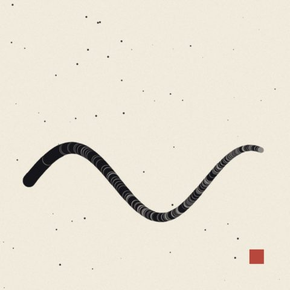
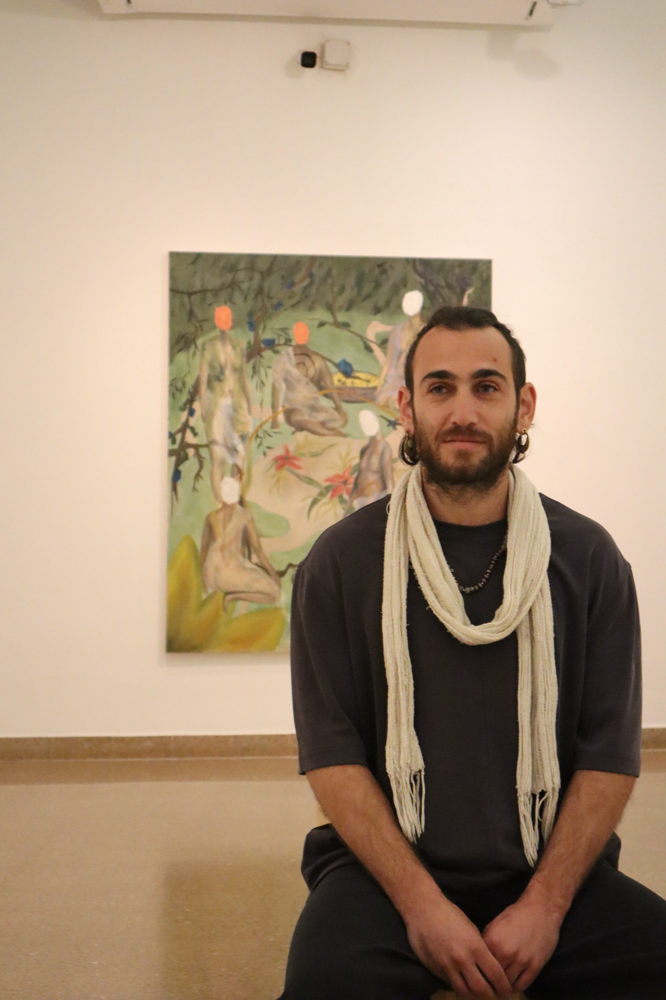
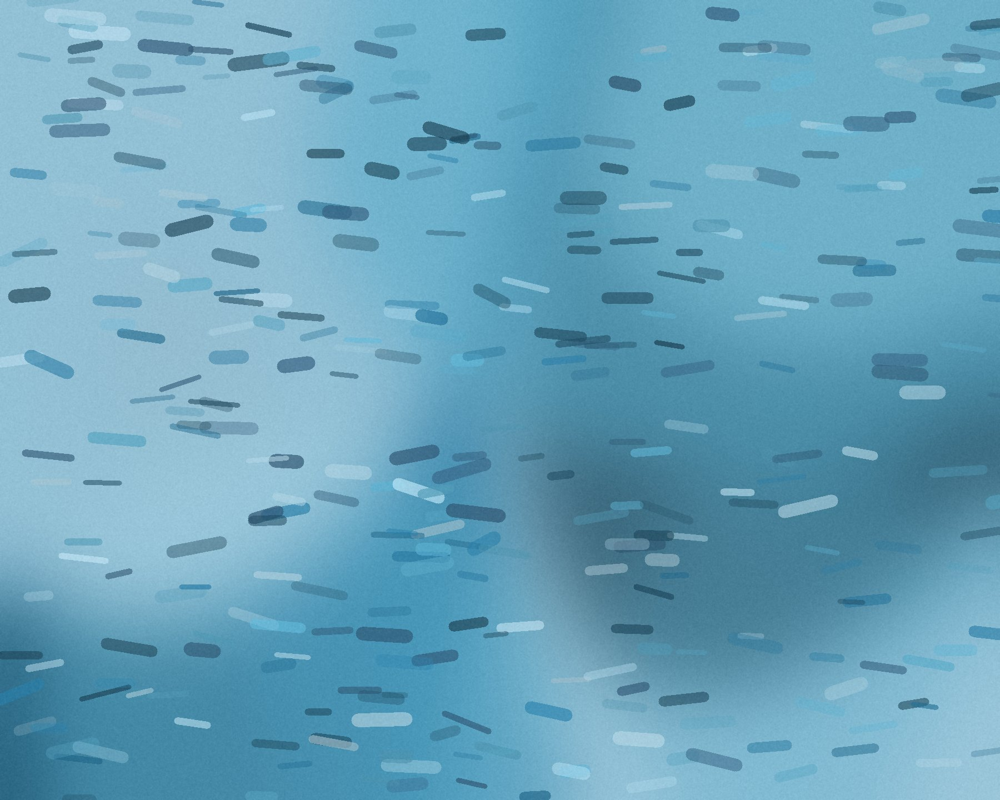
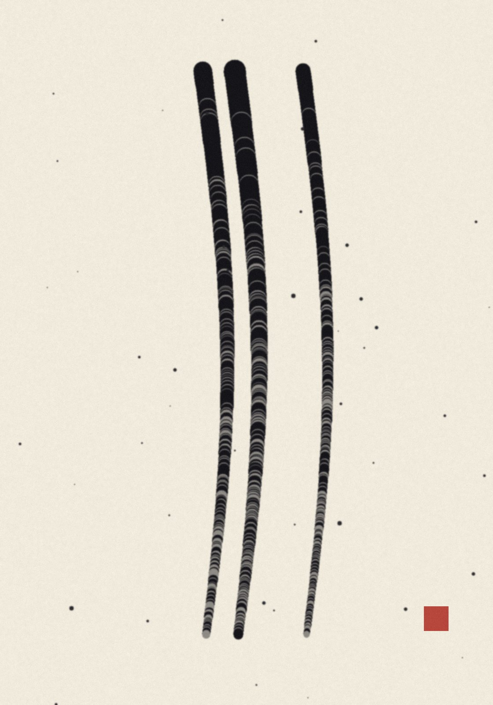
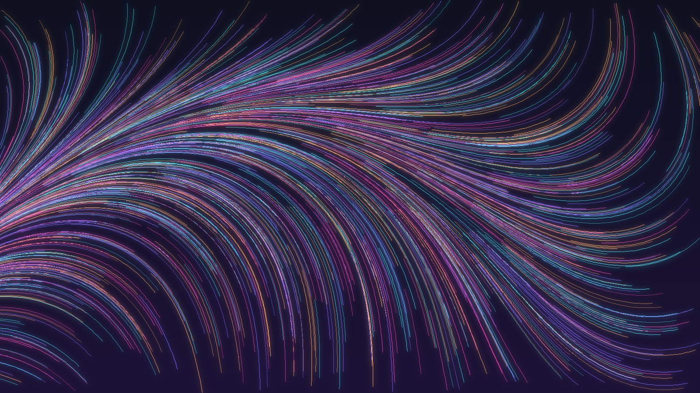
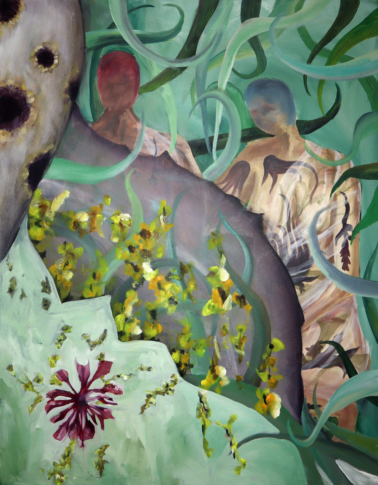
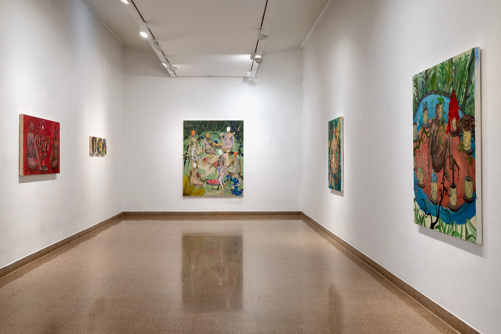

Your artists
 Lia MorénPainting, HaifaOpens Low Tide tonight
Lia MorénPainting, HaifaOpens Low Tide tonight
Maya HaddadWorks on paper, JerusalemTalk on Tuesday, 18:00
Elad AmsalemPainting, Hof HaCarmelTwo new works
Low TideLia Morén · Harbour Gallery20:00
Ink, BreathMaya Haddad · last daysWedLia MorénPainting, HaifaOpens Low Tide tonight
Maya HaddadWorks on paper, JerusalemTalk on Tuesday, 18:00
Elad AmsalemPainting, Hof HaCarmelTwo new works
Signal / NoiseExhibition, online2 min ago
TogetherElad Amsalem, 20261 hour ago
RitualA room in 3DYesterday